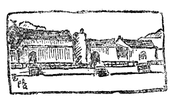
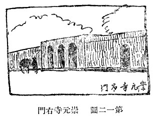
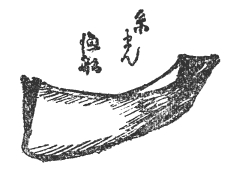
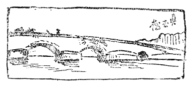
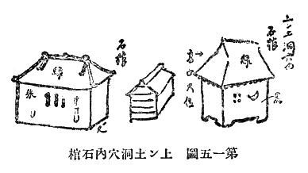
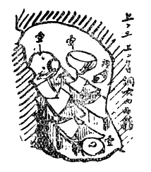
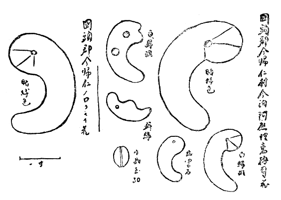
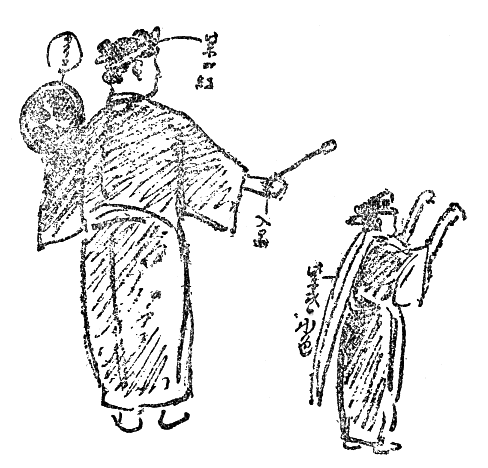

一月五日夕日の光に映ゆる壯嚴な櫻島の山影を後に、山崎君等の舊知に送られて、鹿兒島の港を後にした私は、土地の風俗や言葉を話す奄美大島や沖繩へ歸る人々の多くと同船して、早くも南島の氣分に漂はされた。船の名も首里丸である。幸にも此の冬の季節には珍らしい穩かな航海を續けて、夜は船長や事務長から恐ろしいハブの話や、不思議な島々の話に聞入り、次の日に大島の名瀬の港に大嶋紬の染織を見學して、テイチキと云ふ木が染料であることを覺え、七日の朝には早くいよ／＼沖繩島の島影の見えるのに心を躍らした。
今度思ひがけなく沖繩一見の旅に出るまでは、耻かしながら沖繩本島は淡路島か小豆島位の大さしかないものと思つて居たのであるが、成る程船の左舷の端から端へ連る此の海上に漂ふ長い朽繩の樣な「
今一つは沖繩は珊瑚礁だと教へられてゐたので、水面からやつと浮き上つてゐる位の島かと思つたら、島の北の方には可成高い山が列なつて居り、中程から南は大分平であるが、そこさへ丘陵が高く低く參差してゐることであつた。朝の食事を濟まして急いで荷物を片付け甲板に出て、次第に近づいて來る沖繩の海岸、那覇の港を見入つてゐると、意地惡く時雨がパラ／＼と降つて來る。
嘉永六年五月米國のペルリ提督が、始めて琉球を訪れて、那覇の港に船が近づく時、其の美しく青々とした英吉利の景色にも似た海岸に、ところ／″＼白い斑點のあるのを見た。始めは家かと思つて居たが、其の後これは石灰岩で作つた墓であることが分つたと、便乘のタイラーなる人の日記から抄出して、ペルリの『日本訪問記』に記してゐる。黒船の騷ぎから八十年以後の私達も、殊には考古學の書生たる私には――やはり海岸に散點する白い墓が、何よりも先に直ぐに眼に付いた。但しペルリの船の人々には、此等の墓と共に今一つ、左手に突出した岩塊（波上宮のある）の傍に、思ひがけなく翻つてゐた英國の「ユニオン・ジヤツク」の旗が目を惹いたが、これは當時那覇に滯在して、耶蘇新教の布教に從事して居つたベツテルハイムと云ふ英人の宿所護國寺に立てられてゐたものである。
埠頭に船が着くと、私と同船して來た新任の沖繩縣内務部長階川君を出迎への群集が、船室へドツと押し寄せて來る。その序でもあらうか、清野君から紹介せられて居た西山伊織博士や、眞境名安興君などが尋ねて來られたので、沖繩見物の私の身體も、安心して此等の人々に托することが出來た。而して荷物は寳來館の番頭に。
寶來館に落付いた私は、障子を明け放つた座敷に、名も知らぬ熱帶的な植物を眺め、初夏にも似た強い日光を浴びながら、ボンヤリと南島的氣分に浸つてゐると間もなく、西山博士をはじめ眞境名翁、初對面の島袋源一郎君、豐川君その他福原、中川、清川の諸君が来訪せられ、一體琉球に何を調べに來たかと尋ねられる。これには一寸弱つたが、「實は別に何の當もないが、琉球の事物一切の概念を得るのが目的である」と白状して、六日間の旅程を作つて貰ふことゝしたが、島袋君等の手で早速出來上つて之に唯々諾々從ふことに成つた。
今日は先づ那覇の市中を見物しようと、人力車に乘つて縣廳に顏を出し、その隣りの圖書館に行き、眞境名翁の部屋で豐富に集められた郷土史料をのぞき、又某氏の持參せられたノロの勾玉にも始めて見參する。此の圖書館に近く、東南の松の樹の少し生えてゐる丘陵が、具塚のある
芝生に被はれた珊瑚礁の上には薄い土壤があつて、細い貝殼が處々に見えるばかりで、土器の破片などは殆んど見付からない。況んや樺山君とやらが、數年前掘り出した明刀錢の如き學界を聳動した珍物や、某君の拾はれたと云ふ石鏃の如きは、蝙蝠傘の先きでツツいた位では飛び出しさうもなかつたが、私には此の丘の上にある龜甲形の、琉球式の墓を見ただけでも面白い獲物であつた。
この城嶽のあたりにはハブが澤山居ると云ふが、此の冬の季節では姿を見せないとのことに、大に安心したものゝ、それでは琉球へ來て琉球名物のハブにお目にかゝらずしてしまふのは殘念であると云ふと、それでは血清を採る爲め縣廳に飼つてある奴を御覽になつてはとの事に、早速行つて見ると、大分弱つては居るが、棒でさはると鎌首を立てゝ攻撃の姿勢に出る處は如何にも物凄く、この蛇だけは夢に出られても御免を蒙り度い。
那覇の市中には市役所の高塔が、最初の且つ唯一（？）の鐵筋混凝土のモダン建築として立つてゐる外には、商家（媼家は例外）の殆ど全部は皆赤味がゝつた重い本瓦葺の屋根を頂いた平屋である點に於いて、聊か朝鮮の都邑を思はせるものがある。併し市中の小川に石造の太鼓橋（泉橋）が架つてゐる處は、多少支那的の氣分を現はしてゐる。そして此の橋際に大きな日傘を立てゝ、其の下に老婆が物を賣つてゐる處は、如何にも繪になりさうな景色である。聖廟なるものも丁度この橋の邊にあつて、深緑の木立の間に赤塗りの建物を隱見せしめてゐるが、土塀の中へ這入つて廟内を拜見すると、規模は小さいが全く支那の孔子廟の縮圖に外ならない。之に隣つた明倫堂には昔ながらの番人の久米の人々が長閑に烏鷺を戰はしてござる。
波上宮の入口に近い護國寺には、かのペルリの時こゝに居つて英國の旗をあげ、基督教の傳道に從事し、遂に琉球語の聖書を印行した、ベツテルハイムの記念碑がある。これには彼と關係のあつた歐米等十ヶ國産の石板に各國名（匈、伊、希、墨、琉、墺、埃、土、支、米）を刻して、碑石に嵌してあるのも面白い意匠である。又明治初年、臺灣で遭難した琉球人の碑も其の傍に立つてゐる。此の寺の隣りには天尊廟があつて、一寸面白い天尊の像がある。紺絣の老婦人連が蹲つて拜んでゐるかと思ふと、持參の辨當を食べてゐる。それから近頃やり出した郷土藝術の琉球燒の陶器店に立寄つて、宿へ歸つたのは未だ南島の日の沒しない夕方であつた。
次の日は朝から首里の浦添の見物に出かける。自動車を走らせて、ペルリの艦隊が碇泊して居つたと云ふ牧湊の傍を通つて首里に向ふと、やがて道は蜒々と登つて丘陵は次第に高く、首里の城址が行手に青々と聳えてゐる。私は今迄首里はこんなに高い地形にあるとは想像して居なかつた。併し同時に首里の大通りを通つて、こんなに淋しい田舍村の樣な處と思ひも寄らなかつた。
首里の城の見物は後廻しとして、我々は昔の士族屋敷らしい物靜かな小道を曲つて丘陵を降り、一路浦添の道へと急ぐ。やがて美しい赤松の林のある溪谷に沿ふて、小學校の處で車を降り、其の後ろの山にある浦添の城址に出る。學校の校舍の横を過ぎると、教室の外に「ふつうご」と書いた大きな標語が張付けてあるのが眼につく。何か「不都合」でもあるのかと島袋君に尋ねると、これは生徒に「普通語」を話さす爲めであるとのこと。定めし彼等の騷いでゐるうちに這入つても、私達には其の言葉の意味が全く解し兼ねるであらうが、薩摩芋を辨當にし裸足の生徒は、皆嬉々として活溌に遊んでゐるのは可愛らしく、教育の普及してゐる難有さを感ずる。この學校のある處が、琉球に始めて佛教を傳へた僧禪鑑が、英祖王の時建立した極樂寺のあつた處であると聞かされた。
裏山の上に登りつくと、隆起珊瑚礁の草山には、野生の蘇鐵が庭木の樣にあちこちに生えてゐる。今日は生憎陰寒な天氣で風も強く、眺望には佳くない日であるが、慄へながら斷崖の上に立つと、牧湊の海岸が眼近に白く波打つてゐる。此の城址には古い瓦の破片が散在してゐるが、那覇の圖書館で見た「高麗瓦匠」云々と銘のある平瓦も此處から拾はれたものである。
崖の上は先刻私達の立つてゐた浦添の城址である。蘇鐵の株が生えてゐる懸崖を直角に切つて其處に二つの墓が穿たれ、各アーチ形の入口を具へてゐるが塗込めてある。向ふの方の墓は古い
私は此の浦添の王陵の淋しい氣分がとても氣に入つた。第一「ようどれ」と云ふ言葉は、意味が分からなくても、何となく此の寂寞たる墓域の氣分を善く現はしてゐるではないか。ようとは世、どれとは
「りうきう國てたがすゑあんじおそひすへまさる王にせかなし」
と長々しい尚寧王の神號から始まつて、王が英祖王の陵を修築せしめ、其の曾祖父の遺骸を此處に移し、將來王自らの奧津城にもせんとし、此の碑を建つる旨を莊重な琉球文で記してある。而して最後に「このすみあさくならばほるべし、萬暦四十八年かのへさる八月吉日」とあるのも實に面白いではないか。なほ此の碑背には「極樂山之碑文」と題し、漢文を以て大體同意味の文を刻してあるが、正文の方を琉球の國文で平假名を以て誌してあるのは、却つて日本内地では殆どないことである。日本では筑前宗像神社の阿彌陀經石に、鎌倉初期に後刻した片假名交りの銘がある外、平假名文字の金石文は足利末期以後、かの切支丹の墓碑などに見る位であつて、徳川時代に至つて始めて熱田截斷橋の擬寶珠銘の如き假名の名文を出してゐるだけである。此の點琉球は早く漢文の束縛から解放せられてゐるのは嬉しい。而かも日本では漢文の碑に日本の年號を使用してゐるのに、琉球では國字の碑に支那の正朔を用ゐてゐるのは、此の國の歴史と國情を物語るものとして、却つて我々の興味をそゝるものが大きい。
「ようどれ」の王陵に此の琉球文で書かれた最後の金石文を見た私は、やがて首里の玉陵に其の最古の碑を見ることを得たのである。

第一一圖 玉陵
さて
 して殆ど讀み難くはなつてゐるが、陵前（左方）に立つてゐる弘仁十四年九月の「たまおどんのひのもん」には、「首里おぎやかもいがふしまあかとだる」と、冒頭に尚眞王の一族九人の名を上段に記し、下段には「しよりの御み事い上九人この御すゑは千年萬年にいたるまでこのところにおさまるべし、もしのちにあらそふ人あらばこのすみ見るべし、このかきつけそむく人あらばてんにあをぎちにふしてたるべし」とあり、實に琉球文の金石中最古のものと稱せられてゐる。
して殆ど讀み難くはなつてゐるが、陵前（左方）に立つてゐる弘仁十四年九月の「たまおどんのひのもん」には、「首里おぎやかもいがふしまあかとだる」と、冒頭に尚眞王の一族九人の名を上段に記し、下段には「しよりの御み事い上九人この御すゑは千年萬年にいたるまでこのところにおさまるべし、もしのちにあらそふ人あらばこのすみ見るべし、このかきつけそむく人あらばてんにあをぎちにふしてたるべし」とあり、實に琉球文の金石中最古のものと稱せられてゐる。石門のうち珊瑚礁の細片を敷きつめた廣庭の後ろに、勾欄を前にした三棟の石築墓室が半ば自然の岩壁に據つて造られてゐるのが玉陵の本體である。その黒ずんだ石の色の外には、點景の樹木の緑さへも殆ど見られない單調の色彩と、其の簡單なる直線の配合、伊東博士が此の陵を評して「鬼氣身に沁みる閑寂の裡に、一種の神祕的なる靈感が、ひし／＼と人に迫るが如き氣分である。建築として何の奇もなく巧もなく、而かも人に甚深の感動を與ふる處が、その崇高偉大なる所以であり、陵墓建築として洵に理想に近いものである」と云つて居られるは、實に私の言はうとする所を道破せられて、一語の之に加ふ可きものがない。伊東先生は如何なる時に此の陵を訪ねられたか知らないが、私は丁度どんよりとした時雨空に膚寒い風に吹かれながら、此の陵前に立つて特に此の感をば深くしたことである。
支那式の守禮門を通つて東に進むと、左手に唐破風を頂いた石門がある。これが即ち
 の陶製の扁額に「首里の王おきやかもひかなし御代にたて申候、正徳十四年己卯［＃「己卯」は底本では「已卯」］十一月二十八日」とあるのを以て知ることが出來る。形は小さいが恰好は善く、而かも堅實な感を與へる和漢折衷の面白い樣式が氣に入つた。之と同じ形の門が、私は見なかつたが首里の東北
の陶製の扁額に「首里の王おきやかもひかなし御代にたて申候、正徳十四年己卯［＃「己卯」は底本では「已卯」］十一月二十八日」とあるのを以て知ることが出來る。形は小さいが恰好は善く、而かも堅實な感を與へる和漢折衷の面白い樣式が氣に入つた。之と同じ形の門が、私は見なかつたが首里の東北更に進んで歡會門から龍樋の清泉を掬し、瑞泉門を潜つて石階を登つて行くと、如何にも自分ながら支那の文人畫中の人物にでもなつた感がするが、さて本丸の頂上の廣場に出で、首里城の正殿
この正殿は察度王の時に創立し、今の建物は享保十四年の重修に係るもので、總高さ五十四尺、内部は三層であるが、外觀は重層。大きな唐破風の向拜を前にし、巍然として巨人の如く立つてゐる姿は、萬事規模の小さい琉球には珍らしい堂々たるものであつて、如何にも桃山時代から徳川初期の雄偉な氣分を現はし、隨處に琉球建築の特徴を示してゐる。併し今は大破して大軒も傾き將に覆らんとする危險状態になつてゐる。それで先年保存の道がないと云ふので、危く取り壞されようとしたのを、伊東博士の熱心なる努力によつて沖繩神社の拜殿として蘇生し、特別保護建造物として、今や大修繕の途にあるのは喜ばしい極みである。たゞ恐れるのは遲々たる修理工事の間に、あの危なかしい大軒が沖繩名物の颱風の爲めに、崩れ落ちはしないかとの心配である。
正殿の前には南殿と北殿の建物がある。北の方は議政殿と稱し、支那の册封使の歡待所で、支那風の設備を有してゐるのに反し、南殿は日本風の建物で、薩州の使者を接待した處であると云ふのは、如何にも琉球國の歴史を物語つてゐる。この南殿に接して、もと藩王の住居であつた邸宅の部分が殘つて居り、今は女子工藝學校になつて若い娘さん達が出入してゐるのは、却つて保存の爲めには善いかも知れない。こゝにまた物見櫓の跡が殘つてゐる。
次に見た首里城の傍にある圓覺寺は、此の國に珍らしい七堂伽藍の揃つてゐる佛寺であるが規模は至つて小さい。圓鑑池の中島にある辯才天堂は遠望したゞけで、たゞ此のあたりの美くしい樹の茂みと、龍潭池の眺めを賞して那覇へ歸ることにしたが、途中琉球の神社建築として面白い眞和志村の安里にある八幡宮と沖宮とを訪ね、その調子の變つた蟇股や、柱にかけた假面の彫刻を見、それから崇元寺に琉球王歴代の位牌殿を見たが、この寺の門は首里から那覇への大道に接して立ち、三箇のアーチを開いた何の裝飾もない石造の直方體であるが、それが如何にも近頃の混凝土建築と同巧であるのが嬉しい、伊東博士は之を激賞して
「規模は大ならず手法は簡單であるが、其の中央部と左右翼の取り合せの自然なる、其の相互の廣袤幅員の權衡を得たる、その全部の輪廓の簡明にして要を得たる、その線の少くして一の無駄のなき、數へ來れば限りなき美點が現はれる。一見素朴なるが如くにして、凝視すれば益々豐富である。一瞥粗野なるが如くにして觀察すれは高雅である。極めて無造作なるに似て、實は苦心慘憺の作である。甚だ淺薄なるに似て實に重厚深刻の作である」云々。
と百パーセントの讃辭を呈して、其の獨創清新の意匠を賞嘆せられてゐるのには、私も全く先生の見識に敬服してしまつたことである。なほ寺内の下馬碑に「
第一二圖 崇元寺右門
さて那覇へ歸つて遲い中食を認め休息の暇もなく、女學校で開かれる南島談話會に臨み、それから辻の某旗亭で催された歡迎會に赴いたが、私達が此處で沖繩美人の舞踊に打興じてゐる眞最中、飛電は帝都に於ける警視廳前の不祥事件に犬養内閣の辭表捧呈を報じ、縣の役人方は忙しく座をたゝれる。併し私は此處で十餘年前英國で相知つた神山君に邂逅する喜をも得た。
第三日目には那覇から南方糸滿と南山城を見に行くことにした。那覇町を出て低温な甘蔗畠を過ぎ三里ばかり、糸滿の町の入口に白銀堂といふ祠が道ばたの洞穴の中にある。今は全く近代化せられて一向面白味はないが、例の通り紺絣りの女達が蹲つて切りに御祈をしてゐる。こゝは昔一人の薩摩武士が、貸金の事から美殿と云ふ男を殺さうとしたが、「意地の

第一三圖 糸滿の漁船
糸滿と云ふ處は沖繩でも人種が違ひ、白人の血が交つてゐるとか、イートマンと云ふ外人の名から起つた地名であるとかと云はれてゐるが、私の一見した處ではそんな事はないらしい。漁村のことゝて男は海上に魚取りに出で、女は之を頭上にのせて那覇へ賣りに行きなどして、女も非常に活動する處から、體格も自然に佳いといふ位で、また店に坐つてゐる主婦などに肥え太つた女が多いのは、運動と食物の關係であるかも知れない。魚市場で商賣してゐるのも皆な女であつて、亭主が漁して來た魚を女房や娘が値切りこぎつて買ひ、之に自分が利得を取つて賣り、家族の面々財産を別にしてゐるといふ、日本には珍らしい個人主義的財産制度を持つてゐるので、先年某博士が調べに來られ、それ以來有名になつてゐるとのことである。
併し勿論こんな財産制度の事などはさつきの人種の問題とは違ひ、往來を歩きながら糸滿人の顏をながめた丈けでは分かるものではないので、皆な博識な島袋君の御話の受賣りである。そこで私達は海岸へ行つて、濱邊に引上げてあるウツロ舟を見たり、血なまぐさい魚市場の内を歩いて魚類を見たりしてから、近傍の漁師の家に這入つて、刳木の水アカすくひを買つたりしてから、少し山の手にあるノロ（巫女）さんの家を訪ねることにした。これは沖繩へ來てから始めてのことであつたが、生憎ノロさん自身には病氣で會へず、其の嫁の人から勾玉を出して見せてもらつた。但しこれは極く新しい玻璃製のもので失望したが、祭壇の具合などに興味を感じながらラツキヨ漬を御馳走になつて暇を告げ、町役場の前で車を停めると、親切な役場の方が前町長玉城五郎氏の書かれた案内記などを贈られたので、有難く拜見し、御蔭で此の町から千二百人ばかりも多數の移民が外國に出かけ、昭和四年にはその送金高十一萬圓に上るといふことや、又々此の町には、税金年額一錢を納めるプロレタリヤの何人かあることをも知つて、大に糸滿通となつた次第である。
糸滿瞥見をすましてから、町の東の丘にある南山城址へ行く。これは中山の尚巴思に亡ぼされた他魯毎が居つた居城で、承察度が南山王を稱してから四代百四年、遂に三山統一となつたのは十五世紀の初葉のことである。大した城廓の構もなく、今は城址に小學校と小さい祠が立つてゐるだけ。たゞ近く糸滿の海を眺める景色を賞す可きである。オガンの前に小さい木の臼と杵とが供へてあるのを土俗の資料にと無斷で頂戴して行く。
丘を下つて大きな榕樹の下に滾々と湧出る嘉手志川の源である清泉に、衣洗ふ村娘を眺めながら高嶺村大里の村に入る。こゝは源爲朝が島の運天に上陸して後南遷し、大里按司の女と婚して舜天を生ましめたと云ふ大里村である。この村にノロさんの家が二軒ある。先づ一方の家では如何にも神祕的且つ幽鬱な六十過ぎのノロさんが出て來て、刳拔きの長い大刀箱や、糸目錢などを見せてもらつたが勾玉は傳へて居ない。島袋君がいろ／＼と琉球語で質問せられると、「ウーウー」と應へるので、何と云ふ意味かと聞くと「イエス」といふことだとある。それでは「ノウ」はと尋ねると、殆んど同じ「ウウー」であつて唯だ語尾を揚げるのであるとは如何にも面白い。併し私達も「ウー」「ウウン」の兩語を同じ意味に使ひ、之に頭を竪横に動かす運動を添へて、エンフワサイズしてゐることを思ひ出した。
今一軒のノロの家（西銘ノロ）は美しい芝生の上に殿を作り、庭園なども非常にキレイであり、ノロさんの老婆も頗る快活且つ近代的である。黒砂糖の塊を茶ウケに出され、又々水晶の珠數玉と、一箇の稍古い暗緑色の勾玉を藏してゐる。案内の校長さんから黒砂糖を紙に包んで頂戴し、子供の時喜んで食べたことのある此の絶好の菓子に何十年振に再會したことを喜んだ。
那覇への歸り道は往路とは別に、國場川口に架けられた眞玉橋に出る。これは石造のアーチが中央に三つ開いて居るが、（中央のアーチに眞玉橋、南は世持橋、北を世寄橋と名づけてゐる）。何等の裝飾もなく、却つて簡素堅實の趣を發揮し、實に沖繩第一の名橋と謂ふ可きである。橋の南の袂には「重修眞玉橋碑文」の碑が立つて居り、此の橋が二百餘年前、尚貞王の時代寶永四年から五年にかけ、全島三郡の三十五ヶ間切の人夫、八萬三千餘人を徴して作つたといふ大工事であつたことを勒してゐる。私は北岸から橋を寫生し、午後一時頃那覇の宿に歸り、一休みの暇もなく那覇小學校に出かけて、『日本文明の由來』といふ題で一時間ばかり御喋舌をしたのは辛らかつた。

第一四圖 眞玉橋
併し此の夜は島袋君や福原君の案内で、市中の旭劇場にかゝつてゐる琉球劇『阿摩和利』を見に行つたのは嬉しかつた。劇場は小さく粗末なものではあるが、觀衆の靜肅なのには感心したのみならず、前狂言としての現代劇も中々面白く、見物をして涙を催さしめる場面もあつた。殊に組踊りは男優にして、斯くも女らしく優しく舞へるものかと驚かされた。愈々『阿摩和利』劇となる。これは大體内地の舊劇の仕組であるが、琉球中世の梟雄
第四日目はいよ／＼那覇を出發して島袋、豐川、小竹三君と共に、國頭への旅に出かけた。往路は中街道を普天間から荻堂貝塚を訪ね、中城々址を見、伊波貝塚を經て名護に出る豫定であつたが、伊東博士の『木片集』には、先生が凄しい暴風雨に出會つて、中城の城の麓まで行きながら、遂に城址には登られずして引返された恐ろしい經驗が記されてゐる。併し幸ひ今日の日本晴では其の心配もなく、我々は惠まれた天候を感謝する外はなかつた。
那覇の町はづれ、暫くは失業救濟の道路工事で車の通行も妨げられ勝であつたが、やがて大きな松の並樹――それは尚敬王の時代に蔡温が植ゑた賢明な施設である――のある街道所謂宜野灣の松原に出で、さながら東海道の舊道を走る思ひがする。三里ばかりで
丘を下つて東に進むと、車はやがて中城々址の丘の麓に停り、我々は車を捨てゝ城址に登つて行く。
「勝連 はなれにぎや譬へる、
倭 の鎌倉 に譬へる、
氣も高はなれにぎや」
とオモロに歌はれ、氣も高はなれにぎや」
「百踏揚 や、けさよりやまさて
百 と按司 の、主 てだ、なりわちへ、
君の踏揚や、首里 もり城 、
眞玉 もりぐすく」
と羨まれた其の配君の踏揚や、
村役場の建物は床の間などに可成古い跡が殘つてゐるが、固より護佐丸當時のものではなく、護佐丸の遺物と稱する煙草盆の類も、今更評する迄もないが、乾隆五年と十年に出來た此の地方の古い地圖は、郷土研究には非常に參考になると思ふ。我々はやがて喜捨場の小學校へ引き返して、携帶の辨當を使ひ、校長夫人の心盡しになるドウナツの御菓子などを有難く頂戴した。
喜捨場から北進して、氣持のよい田舍道を二時間足らずで伊波へ着いた。こゝでも小學校の校長先生の案内を煩はして、學校の東北にある貝塚へ行く。隆起珊瑚礁が庭石の樣に起伏する間に、蘇鐵の株がこれ亦た庭木の如く繁茂してゐる。「貝塚は此處です」と指された處は、石川村の方に降りる小徑が、階段の樣についてゐる數十尺の懸崖の中腹であるのには驚いてしまつた。此の東方海に向つた崖は、或は昔し脚下に碧波を見る海沿ひであつたにせよ、さても此の危險極る不便な處を選りに選つて、人間が住居を構へるとは不思議の至りである。後で聞けば私共の見た處よりもなほ北方に貝塚の中心はあるのだとのことであるが、それにしても大體の地形は此處と同じであるとの事。私共の見た崖の中腹には貝殼は極く少量散布し、土器の破片も小さいのが稀に見つかる位であつたが、その土器の模樣は、荻堂などと全く同一のやり方であつた。
伊波貝塚を一瞥した私達は、恩納村の邊で西海岸の縣道に出で、こん度は美しい海岸の或はアダンの防風林、或は面白い岩礁などを送迎しながら、遂に名護の町に著いたのは午後四時近い頃であつた。大きな榕樹の立つてゐる警察署前の通りは、廣場とでも云ふ可くカラツとして氣持よく、如何にも大きな宿場らしい感がする。裏通にある一新館と言ふ宿屋へ納まると、とにかく新築の二階座敷は眺望もよく、東に近く小高い山が見える。あれは名護の南城嶽とて、あの上にノロさんが住んで居り、勾玉を傳へてゐる、「どうです、御疲れでなければ夕食までの間に行つて見ませう」と島袋君に勸められては、實は少々草疲れてはゐたが、勇氣を鼓して出かけることにした。山の上にはノロさんの家があり、そこから少し離れて神社風の小さい神殿が建てられ、その前には拜殿もある。これは全然新式のノロの殿である。丁度此の時ノロさんは其の神殿の前で祷つて居り、その傍に二人の少女とその母親らしい人が二人居るので聞いて見ると、是は本年高等女學校へ入學の出來るやうに祷つてゐるとの話。而かも此の山のノロさんは、現在名護の女學校の生徒であるので、當分親類の女の人が代理をしてゐるのであるといふ。さればこそノロさんの家には女學生の制服や教科書が座敷に見えたのも解せられた。さても此の女學生のノロさんの時代頃に入れば、定めし色々信仰や祭儀にも變化が現はれることであらう。
ノロさんの家で勾玉と此の地發掘の銅鏡二面を見た。鏡はヤマトの時代で言へば藤原以後、恐くは支那傳來のものと思はれる。更に後ろの神山の上に登つてから宿に歸ると、私達の後を逐つて來た福原君が來著せられ、夕食の後村の青年會の人々十數人が、特に私達の爲めに盆踊りをやつて下さるといふので、洋服に著かへなほして見に行つた。琉球なればこそ此の一月のはじめに、野天で篝火を焚いて踊を見ることが出來るのであり、村人の厚意には深い感謝の念を捧げる外はなかつた。
次の日は朝九時神田、福原二君などを加へて、名護の西方小一里にある

第一五圖 上ン土洞穴内石棺

第一六圖 上ン土上ンヤマ洞穴内石棺
運天へ車を急がす道すがら、呉我の村では高倉を見、また山原の女が額から掛けた竹籠を脊に運ぶのを見た。此の竹籠を一つ買ふことにし、或る店に頼んで歸りがけに受取ることにした。これから先きの街道人家の前には、例の豆腐を並べて賣つてゐるのが行列をしてゐた。運天の港には裏山から這入り、先づ東郷大將の筆になる源爲朝上陸の碑のある處に登ると、小さいキレイな港が眼下に廣がつてゐるが、碇泊してゐるのは、爲朝でも乘つて來さうな小船が一つ二つ、永萬元年鎭西八郎が運を天に任せて、逆卷く怒濤を冒して此の港に辿り着いたか否かは、史實として證明しかねるとしても、慶長十四年島津氏が百艘の船を以て琉球入をしたのは確かに此處からであつた。
爲朝の碑の下山腹の懸崖には、有名な
此の墓に就いては、或は四百年前亡んだ尚徳王の遺臣を葬つたのであると言ひ、或は尚巴志王に亡ぼされた北山の王族の墓であるとも言ふが、とにかく慶長頃即ち三百餘年前、北山王の末裔が六百數十金を投じて之を修理し、木造の社殿を作つたことは事實で、幽芳氏は其の圖を著書中に載せてゐる。
山を下つて懸崖の下に作られてある稍々新しい墓を覗くと、之には中に骨壺が一ぱい、奧の方には木棺や、白骨がウヨ／＼してゐる。私はこんな墓を調査に此の村へ滯在し、白骨と枕を並べて寢たＴ・Ｋ博士の熱心には、專門の學問とは言へ敬服せざるを得ない。
今歸仁と書いて「ナキジン」と讀むことを覺えたのも、沖繩へ着いて以來、即ち數日前からのことであるが、此の北山王の故城のある今歸仁の城にこれから出かけるのである。今泊の村から丘陵を登つて、昔家屋敷のあつたアタイ原と言ふ處を通ると、兩側には蘇鐵などの庭木が昔ながらの庭園の跡を偲ばせる。山の上本丸の址には今歸仁城の碑があり、小さな神殿もあるが、一體に石垣がよく殘つて居り、物見櫓の跡もある。規模の大なることも遙に中城などを凌いでゐる。殊に東は懸崖數十丈、その下に淙々たる溪川が流れ、此の伊平屋島［＃「伊平屋島」は底本では「伊乎屋島」］を指呼の間に眺める景色は譬へ難い美しさである。山上に愛創石［＃「愛創石」は「受劍石」の誤りか］と言ふのがあつて、此の北山陷落の際、勇將攀安知が力盡き自盡せんとする前、日頃禮拜して居た靈石の驗なきを憤慨して、刀を以て兩斷したものであると言ふ凄じい石である。而して其の刀は今なほ尚侯爵家に傳はつてゐると聞いた。
山を下つた所に、丁度島袋君の岳父の家があるので、一同其處に御厄介になつて中食を使ひ、又々島袋君の手廻しで、今歸仁のノロクモイの傳へてゐる勾玉（一ヶ）と、今泊の阿應理惠按司の勾玉（廿一箇）や、玉草履を持參してもらつて見ることを得たのは何よりの幸であつた。殊に後者には呉形勾玉二箇、出雲石のもの一箇、大抵はＴ字頭を有し、其の石質の白味のある硬玉であることから、形状製作に至るまで、いづれも朝鮮新羅の勾玉に酷似してゐると見るは、琉球勾玉の本質、延いては勾玉全體の考察に重大なる寄與をなす事實であると思はれた。何分にも時間がなく、前から頼んで置いた恩納村の人々は、定めし踊りを見せようと待つてゐられることゝ氣がせかれるので、詳しい調査は、一度島田君にでも來てもらつてすることにして、二時頃名護に引きかへす。

第一七圖 國頭郡今歸仁村今泊阿應理惠按司勾玉
早速區長さんに案内されて、街道の裏の神山の廣場に登ると、其の道筋さへ新に手入れがしてあり、廣場の附近には多勢の見物人が集つて、宛ら御祭りのやうである。半圓形にしつらへた席には、既に見物の人が坐り込んで、私の來るのを今か／＼と待つて居られ、盛裝した踊り子の婦人老若四五十名は、用意全く終つてシビレを切らして居られる有樣に、私は今迄自分一個の爲めに斯くばかりの催しを受けたことがなく、たゞ／＼恐縮と感謝との念に心一ぱいになつたのである。
やがて

第一八圖 恩納の臼太鼓踊
歌詞は幸ひ謄寫版で印刷してあるのを呉れられたので、それを辿りながら聞いて居つても中々附いて行けぬ。先づ
十七八ぐるやな 女 のさかい
八つと九つや ちゞのさかい」
思ゆらはさとめ かた夜暗 いもり
月 の夜にいもち なくしたちゆさ」
泊帆舟小 や 浮 ちよてちびふゆさ
だちよてちびふゆぬ かぢどーあやーめー」
但しこの例とても、私に意味が善く分かつたと言ふのではない。臼太鼓がすんで若い娘さん達の組踊數番があつたが、凡て踊り手は足袋はだしか、或は全くの裸足である。八つと九つや ちゞのさかい」
思ゆらはさとめ かた
だちよてちびふゆぬ かぢどーあやーめー」
私自身よりも郷土研究家島袋君が、大いに感服して眺め入つて居られたが、日はだん／＼西の海に沈んでしまふ有樣に、村の衆に此の類なき厚意を感謝し、別を惜んで那覇に向つたが、私は此親切純朴な恩納の人々の厚意を永久に心に銘じて忘るゝ事が出來ない。
歸途は海沿ひの街道を嘉手納に出で、始めて輕便鐵道の列車の走るのを見た。街道筋には廣い道幅のある村落があり、又大きな松の並木が續いて居る中を、時々すれ違ふ自動車のヘッドライトに、假睡に落ちようとする眼を醒させながら、那覇の町へ這入つたのは午後七時過ぎ、二日ぶりに電車の走るのを見るのも、流石に都らしく懷かしい思ひがした。
南は糸滿から南山城、北に名護運天から北山城をも訪ね得た私は、これで先づ／＼琉球一見の目的を達したのを喜んだが、宿まで送り届けて下さつた小竹君は、イヤ未だ一つ重要な見物場處が殘つてゐる。それは即ち有名な辻遊廓である。御疲れでなくば後から御案内致しませうとの事に、如何にも那覇に到著以來、毎々聞かされた此の遊廓を瞥見しなければ、何だか濟まぬ氣がしたので、夕食後○君の同道を煩はすことに決心した。
辻の遊廓の起原は古く、寛文十二年（康熙十一年）方々に散ばつて居つた
私は○君の案内があるので、「竹の家」とか言ふ家に上り、大いに（？）歡迎せられたのは有難い仕合せであつた。女連は別々の部屋を持つて居り、内部は美しく飾つてあり、夜具棚の中にあるキレイな蒲團まで善く見える處などは、丁度朝鮮平壤で見た妓生の部屋と同じであつた。私達は階上の大きな座敷に請ぜられると、○君舊知の妓
辻の遊廓は所謂遊廓の目的の外に、實はカフエー、レストラン、サロンなどの各種の設備としての意義をも具へてゐる處が面白い。將官教員などの宴會も以前は多く此處で開かれ、甚しきは婦人會さへ催されたことがあると言ふ。蓋し最も輕便安値であり、而かも最も朗かな氣分を與へるからであらう。一方から言へば各種の社交機關が、未だ分化しない状態にあると言つても宜いが、同時に又女連は女給であり、藝妓であり、又娼妓である凡ての性質を保存してゐる處に善い點がある。從つて此の遊廓に出入することは、必しも士君子の排斥を買ふことでないとも聞いたが、歸洛後伊波君の『沖繩女性史』を拜見すると、斯の如きは明治維新後、内地から獨身者の縣官などが來て、自から馴致した惡風であると書いてあつたので恐入つてしまつたが、それにしても彼等は朝鮮の妓生と共に、昔の白拍子的の遺風を傳へてゐる、現代に於ける可憐なる一つの存在である。之を呼ぶに
昨夜遲く宿へ歸ると、病院の中川君が待つて居られて、古い琉球の型染の衣裳や、下手物の陶器などを持つて來られ、私は坐ながらにして好箇のお土産を獲ることが出來た。さて私の沖繩滯在の最後の日は午前中西山君に伴はれて、小竹君、島袋君と共に、首里の西南部にある尚家の南苑識名園を拜見することが出來た。規模は必しも大きくないが、大體は日本風の庭園で、心字形の池の中島には六角亭があり、書院の御殿も亦和風であるが、石の拱橋だけが支那風である。優雅な庭園の一端には、勸農臺と言ふ見晴しがあり、島尻の平野丘陵を望み、昔國王はこゝから人民の農業に從ふ所を見たと言ひ、又支那の册封使がこゝに來ても、沖繩の島の小さいことを隱す爲めに、海が少しも見えない樣になつてゐるとのこと。但し今は遠い丘陵の樹木がなくなつて少し位海岸の隱見してゐる處もあるが、とにかく廣い見晴しである。歸途には人家の石垣の上に生えてゐる「大谷ワタリ」を記念に取つて歸り、又高倉のあるのを見た。
宿へ歸つて中食をして、二時出帆の船に乘らうとすると、出帆が五時に延びたとのことで、圖書館や縣廳へ挨拶に行く時間が見つかつた。いよ／＼四時過ぎ臺南丸に乘込むと、丁度前内務部長が歸國せられるのを送る人々で、船も岸も見送りの男女で一ぱい。私は丁度京都へ歸られる福原君と行を同じくした上、はからず臺灣からの歸途、此の島に立寄られた農學部の沼田教授とも同船したので、神戸まで四日の船路の淋しさを忘れることが出來た。
やがて臺南丸は埠頭を離れて港外へ搖ぎ出した。數日の間さながら古い友達の樣に親切にして下さつた西山、眞境名［＃「眞境名」は底本では「眞識名」］、島袋などの諸君と、振りかざす帽子の影も互に見えなくなり、波上の岬、無線電信の柱も、やがて視界から消え去つてしまつた後、私は臺南丸の船室に這入つて、三十餘年前日清戰爭の直後、亡き父が此の船に乘つて臺灣に往來せられたことを思ひ出して心を破つたと同時に、當年の優秀船が今は琉球通ひに廻はされてゐる運命の變轉を悲しんだ。而して大島に寄港した翌日からは、晝は中城貴族院議員の氣焔に聞入り、モンスーンの大ウネリに惱まされつゝ、夜は樂しかつた沖繩の旅に夢路を馳せた。
清河君が私の小さい娘に贈られた木の葉蝶の額、福原君からの蘇鐵の鉢をはじめ、大谷ワタリの株、パパイヤの籠等々、南島のお土産を大事に携へながら。
（ドルメン二―九 昭和七、五―一二）